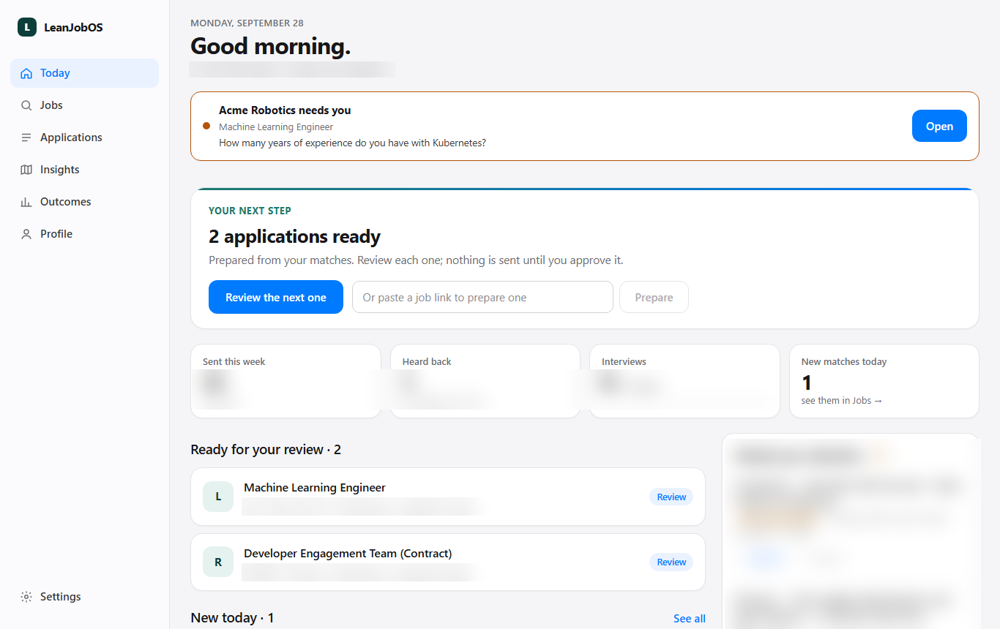
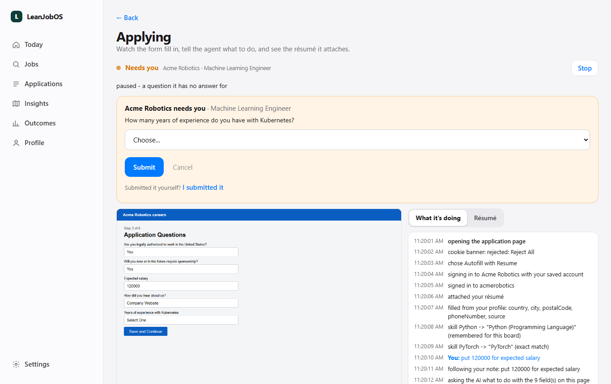
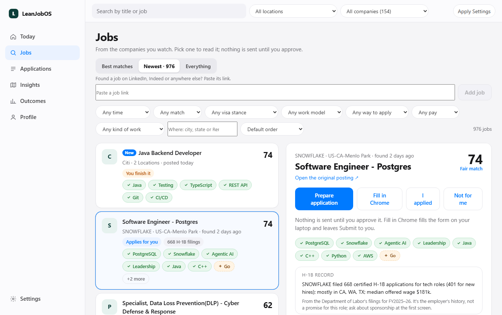
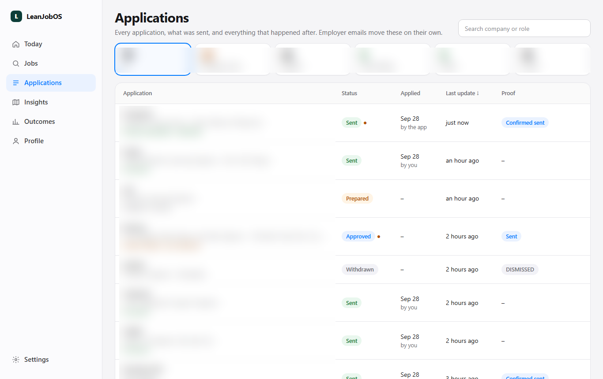
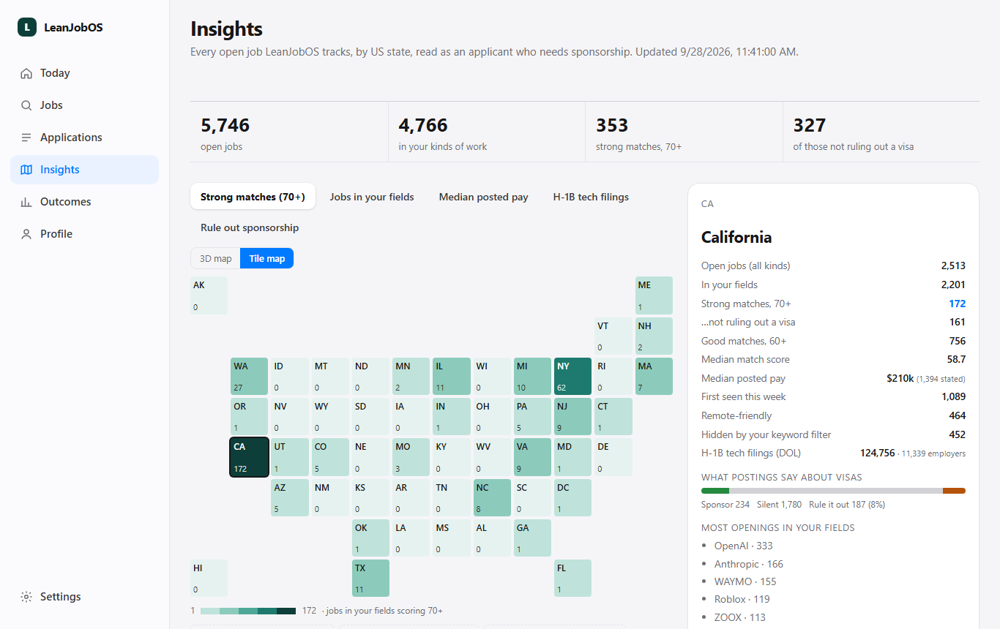
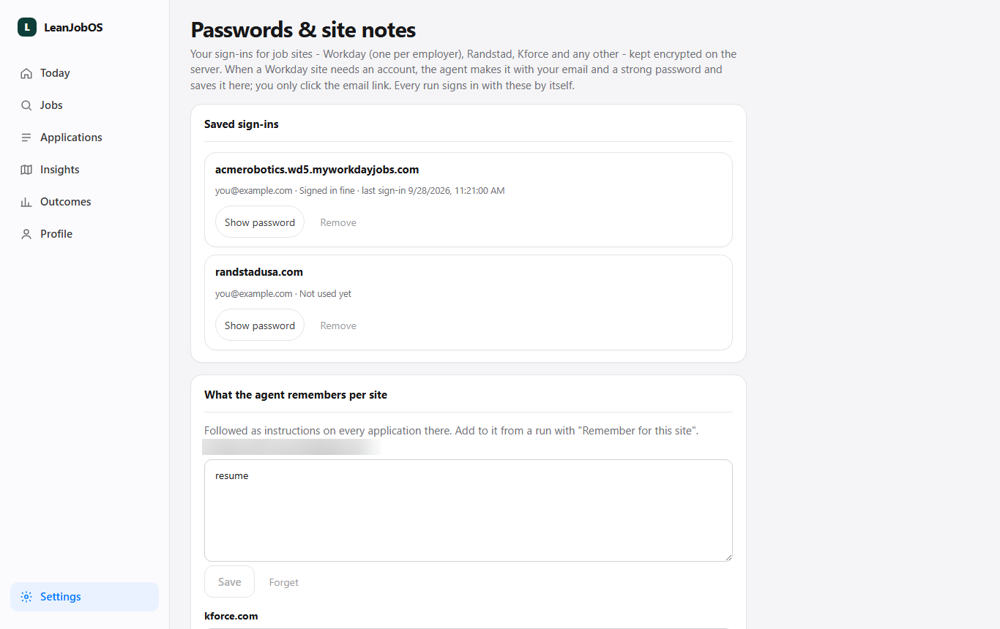
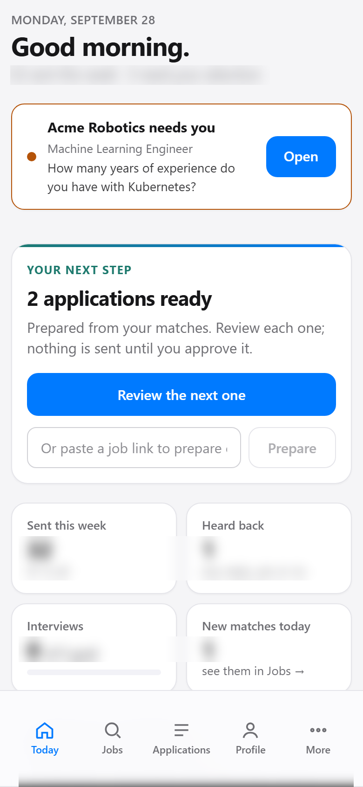
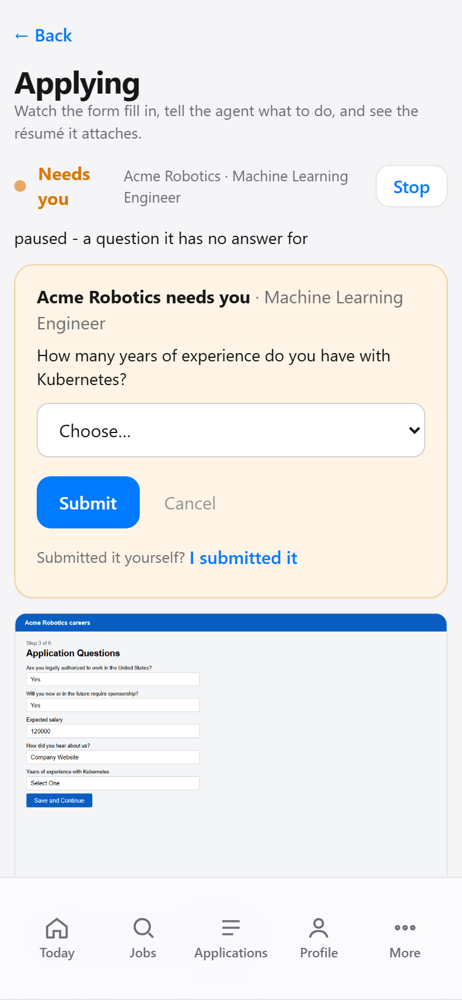

What needs you, then what's next
- An application that needs you is one line with Open — the details live on its own page.
- Your next step: drafts ready for review, or new matches.
- Applying now, with Watch & chat, Stop and Stop all.
LeanJobOS finds roles that fit, prepares each application, and fills it in Chrome on your laptop while you watch from your phone. Nothing is sent without you.
Screens are from my own running copy, captured 28 September 2026. Company names and counts from my real job search are blurred; "Acme Robotics" is a stand-in.
The server runs all the time and holds everything. A small program on each laptop — the worker — is the only part that touches application forms. It asks the server for work, opens a Chrome tab per application and reports every step back, so you can follow along anywhere.
flowchart LR P[Your phone / browser] -->|site password| S[Server
database · job search · AI] S -->|jobs twice a day| B[Company job boards
and careers portals] S -->|each morning| L[LinkedIn · Indeed
via Apify, logged out] W[Worker on your laptop] -->|asks for work, reports back| S W --> C[LeanJobOS Chrome
a tab per application] C --> F[Employer's form
Workday · Greenhouse · Lever · Ashby]






Add it to your home screen. A notification tells you when an application needs you; tapping it opens that application's live page.

